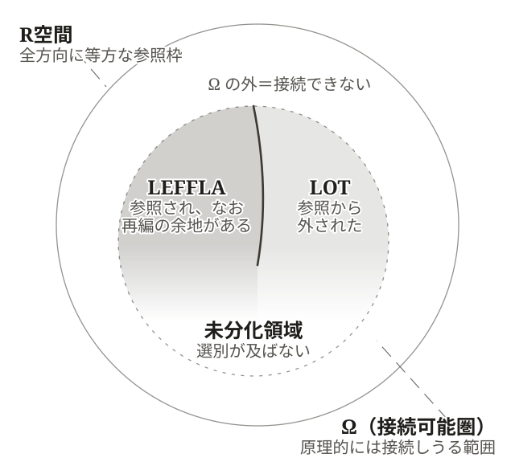

第3章 LEFFLAとLOT——圧縮の二面と頓死の構造
ろうそくの炎は、蝋が尽きれば消える。それは寿命である。だが、それとは別の消え方がある。燃えつづけた炎が足元の蝋を溶かし、広がった蝋の池に芯が沈んで、炎が立っていられなくなる。蝋はまだ残っているのに、火が消える。燃料が尽きたのではない。燃えることそのものが、燃えつづけられなくなる条件を、内側に積み上げたのである。
圧縮にも、同じ形の影がさす。切り取ることで立ち上がった世界の足元にも、立ち上がりつづけることそのものによって、溜まっていく何かがある。それが何であるかは、まだ名を持たない。
なぜ系は、寿命が尽きるより先に、停まることがあるのか。
§3-1 系は他の系の中にいる——接続可能性の三モード
動いている系は、孤立して動いているのではない。系は外を持つことではじめて立ち上がる——「圧縮から創発する世界」（第2章）で見たとおりである。そして、その外には別の系がいる。恒星のまわりには別の恒星がある。細胞のまわりには別の細胞がある。「我ら」のまわりには別の「我ら」がある。
系が他の系の中にいるとは、どういうことか。それを記述する装置から、本章は始める。
信号が往復できること——因果的接続可能性
まず一つの基本条件を立てておきたい。系のある部分と別の部分が相互に応答できるためには、両者のあいだで信号が有限時間で往復できなければならない。
会話が成り立つためには、こちらの声が相手に届き、相手の返答が返ってくるまでの時間が、話の流れが進んでいく速さより短くなければならない。返答が一日後に届くなら、それは会話ではなく書簡のやりとりになる。書簡のやりとりでは、こちらの手紙が相手に着くまでのあいだに、別の人からの便りが先に届いて話の前提が動いてしまうことがある。手紙を出した時点では、それが読まれるときの状況は確定していない。
この事情は、もっと一般的な事実に支えられている。あらゆる信号は、伝わる速さに上限を持つ——どんな手段を使っても、光より速くは伝わらない。これは現在知られている範囲での宇宙の基本制約である。たとえば1光年離れた二点のあいだでは、新しい情報が届くのに少なくとも1年かかる。1年より短い時間で互いに応答しあうことは、原理的にできない。信号が伝わっているあいだに別の場所からの信号が割り込んでくる余地も、距離が大きいほど広がる。
系の中の二つの場所が、相互応答を通じて一つの結合体として動いているためには、信号の往復にかかる時間が、その系の構造が変化する時間より十分短くなければならない。
本書はこれを因果的接続可能性と呼ぶ。
因果的接続可能性は、三条件（§2-3）と並ぶ独立した条件ではない。三条件が意味を持つための前提である。LEFFLA も、HIAM も、フィードバック時間も、相互応答が可能な場の内部でしか成立しない。
一つ、書簡の喩えから先取りしておきたい。手紙を出した時点では、それが読まれるときの状況は確定していない。届くまでのあいだに、別の便りが割り込んで前提を動かすかもしれないからである。それなら、出した側にできることは一つしかない。評価の定まらないものを、評価の定まらないまま、返事が届くまで抱えておくことである。この「届くまで抱えておく余地」は、怠慢でも未熟でもなく、信号の速さに上限がある世界で応答しあう系のすべてに要求される構えである。第2章で LEFFLA と名づけた領域——本章の後半で LOT と対にして定義し直す——の、もっとも基底的な原型が、ここにすでに現れている。
届くことからつながることへ——構造的接続可能性と反応的接続可能性
ここで一つ、注意しておきたい。信号が届くこと自体と、結びつくことは、区別される必要がある。
物質や場の相互作用は、信号が届けば成立する。重力は、銀河系の端まで届く——構造変化のスケールに対しては十分に速い。ガス分子は、ぶつかれば運動量を交換する。電磁場は、変化を有限速度で伝える。これは構造的接続可能性である。物理基底のレイヤーで、もっとも基礎的な接続のあり方である。
しかし、信号が物理的に届くことが、その上位の意味で「結びつく」ことを保証しない。
ヘリウムやネオン——希ガスと呼ばれる元素について、考えてみよう。これらの原子は、他の原子と物理的に衝突し、近接できる。電磁場を介して相互作用する。構造的接続可能圏の内部に存在している。それでも、通常の条件では、化学結合のネットワークには入りにくい。閉殻電子配置のために、他の原子と結合・反応する経路が、ほぼ閉じている。物理的にはそこにあるのに、化学的な反応ネットワークからは実効的に排除されている。
これは別のモードの接続である。反応的接続可能性——物理的に接近できるだけでなく、結合・反応・再配置のネットワークに実効的に参入できること。化学のレイヤー、生命のレイヤーで前面に出てくる。
構造的接続可能性が成立しても、反応的接続可能性が成立するとは限らない。希ガスはそのことを端的に示している。
もう一つのつながり方——意味的接続可能性
さらに、もう一つのモードがある。
古い言語で書かれた書物が、物理的には伝わっているとしよう。羊皮紙、粘土板、石碑——形を保って後世に届いている。手に取ることができ、目で追うことができる。だが、その言語が後の世代に伝わらなかった場合、書かれた内容は、後の世代の判断・予測・行為選択の回路には、実効的な入力として組み込まれない。物理的に届いている。反応的にも到達している——保存され、運ばれ、目録に記録される。だが、意味としては届かない。届かないまま、何百年も書物の山が積まれていく状況が、繰り返し起きてきた。
ここに意味的接続可能性の領域がある。信号が届くだけでなく、判断・予測・行為選択・自己記述の回路に、入力として実効的に組み込まれること。意識のレイヤー、文明のレイヤーで、立ち上がる接続のあり方である。構造的接続、反応的接続も含めて、つながること自体を意味の生成であるとする考え方もありうるが、本書では、この三つの接続モードを区別する。
三つの接続モードは還元できない——「接続されているが参照されない」の発生
これら三つの接続モード——構造的・反応的・意味的——は、階層的に重なってはいるが、互いに還元できない。
上位のモードは下位のモードを前提とする。意味的接続には反応的接続が要り、反応的接続には構造的接続が要る。だが、逆は成立しない。下位の接続が成立しているからといって、上位の接続が成立するとは限らない。希ガスは構造的に接続されているが反応的には接続されていない。古言語の書物は反応的に到達しているが意味的には接続されていない。
三つの接続モードが分岐するとき、ある領域が新しいかたちで出現する。物理的にはそこにあり、ある下位のモードでは接続されている。だが、上位のモードでは接続されていない。 接続可能圏の内部にありながら、ある側面では参照されない、という領域である。
接続可能性のモードが単一だったなら、接続されているか、いないか、の二択しかない。複数のモードに分岐するから、はじめて「接続されているが参照されない」という中間的な状態が成立する。
この中間的な状態こそが、本章の主題である領域の母胎となる。
§3-2 スナップショットで切る——LEFFLA と LOT の対定義
時間を止めて切る——接続可能圏 Ω
「接続されているが参照されない」中間的な状態を、もう一段精密に取り出したい。そのために、ここで動いている系をある瞬間で切る。
動的視界を保ったまま記述するとき、系は絶えず動いている。流れは入り、構造は形成され、終結し、再編される。次の瞬間には、参照される領域も参照されない領域も、輪郭が動いている。
だが、装置を取り出すためには、いったん時間を止めなければならない。動いている系をある瞬間で切ったとき、何が見えるか。
ある時点において、その系の接続可能圏を考える。構造的・反応的・意味的に接続しうる範囲の全体、すなわち因果的接続可能性の条件（§3-1）を満たす範囲である。本書はこれを Ω と書く。Ω の内側は、系がどう作動するかとは別に、原理的には接続できる範囲である。Ω の外側は、そもそも接続できない——因果的接続可能性の条件（§3-1）を満たさない領域である。信号が物理的に届かないほど遠い場所、系の作動時間に対して往復が間に合わない場所、別のレイヤーで完結していて反応も意味も共有しない領域などがここに含まれる。
R空間（「世界を切り取る幾何学」第1章）との対応で言えば、Ω は R空間の真部分集合である。R空間 ⊇ Ω という構造は、本書のこれ以後の章で繰り返し効いてくる。Ω が時間とともに動く（環境変化によって広がる・狭まる、系自身の操作によって改変される）からこそ、固着した選別構造はその動きから取り残されうる。逆に、Ω の動きを先取りして選別構造を変形する戦略も、原理的にはありうる。
LEFFLA と LOT——Ω 内の対
Ω の内側を、さらに分けてみる。
第一の部分集合は、系が現に参照している領域である。系の選別構造によって有意味な入力として採用され、判断・反応・予測・更新の回路に入っているもの。ただし、参照されているだけでは足りない。再編・探索・更新の余地が残されていなければ、その領域は固定化され、動的な再生産には寄与しない。
本書は、参照されており、なお再編の余地を残している有効領域を、第2章 §2-3 で動的境界条件として導入した語で呼ぶ。LEFFLA である。第2章では HZ 内に留まるための境界条件として動的に位置づけたが、ここではスナップショットで切ったときの領域として記述し直している。両者は同じ構造の異なる視界からの記述であり、T空間の高精度保存域と低精度保持域（「世界を切り取る幾何学」第1章 §1-3）がここに対応する。
第二の部分集合は、Ω の内側にありながら、系の選別構造によって参照不能化された領域である。物理的・反応的にはそこにあるが、系の判断・反応の回路には実効的に組み込まれていない。前節の希ガスや古言語の書物がこの位置にいた。
本書はこの領域を、LOT（Latent Outer Tail：構造化された盲点） と呼ぶ。Latent は「潜在的に存在する」、Outer Tail は「外延に位置する」を意味する。構造化された盲点は、それが偶発的な見落としではなく、選別構造の働きによって体系的に参照から排除されている領域であることを示す。
LOT は Ω の外側ではない。 Ω の外側——そもそも接続不能な領域——は、その系にとってそもそも存在しない。LOT は違う。接続可能圏の内側にあり、信号としては届きうるし、物理的にも反応的にも近接しうる。にもかかわらず、選別構造の働きによって、系の参照回路には入らない。「うっかり見落とした」のではない。構造的に切り捨てられている。
LEFFLA と LOT は、Ω の中で対をなしている。何かが LEFFLA に入るとき、別の何かが LOT に入る。系の選別構造は、Ω 内の差異のうち、どれを LEFFLA 側に置き、どれを LOT 側に押し出すかを規定している。
未分化領域——Ω 内の第三の部分集合
Ω の内側には、もう一つ部分集合がありうる。選別構造がまだ及んでいない、どちらにも分節されていない領域である。本書はこれを未分化領域と呼ぶ。差異が入っていない、勾配のないフラットな潜在性である。未分化と呼ぶのは、分化しないと決まっているからではない。いずれ分化しうる——ただし、それがいつかは決まっていない。そしてその「いつか」は、その系が続く時間より長いかもしれない。未分化領域の一部は、その系にとっては、ついに分化しないまま終わる。基底層に近づくほど、未分化領域は大きい。選別構造そのものが法則の中に組み込まれているだけで、能動的な分節を要さないためである。文明レイヤーに上がるにつれて、未分化領域は狭まり、LEFFLA と LOT の対が前面に出てくる。
これで、本書の基底構造として R空間 ⊇ Ω = LEFFLA + LOT + 未分化領域が立ち上がった。R空間は参照枠としての全方向に等方な空間、Ω はそのうち系が接続しうる部分集合、Ω 内は LEFFLA・LOT・未分化領域に分節される。LEFFLA は勾配を持って保持された未確定性、LOT は選別構造の反対側に落とされた不可視域、未分化領域はまだ選別が触れていない残余——三つの部分集合は Ω の内側で層をなす。次節（§3-3）で見る圧縮は、この未分化領域の一部を LEFFLA へ、別の一部を LOT へと切り分けていく操作としても現れる。

分節は外から動かされる——接触が選別構造を組み替える
いま切り出した分節は、静止した地図ではない。スナップショットで切るとは、その瞬間の輪郭を取り出すことであって、輪郭が固定されていると主張することではない。
動いている系は、他の動いている系との接触のなかでしか動きつづけられなかった（「圧縮から創発する世界」第2章 §2-5）。そして接触は、相関構造を揺るがす。この揺らぎを、いま立てた Ω の語彙で言い直しておく。
他系から流入した Flux は、系の Stock の組成を変える。組成が変われば、何を「関係するもの」として浮かび上がらせ、何を背景に沈めるかという選別の有効性が組み替わる。前景にあった差異が背景に沈み、背景にあった差異が前景化する。Ω の内側に LEFFLA と LOT と未分化領域の境目を引いているのは、系の選別構造である。その選別構造が、接触によって外から動かされる。
したがって、分節は二つの契機で動く。一つは、系が手を伸ばし、未分化領域に単位を立てる契機（第2章 §2-4）。もう一つは、接触が選別の有効性を組み替えた結果として、系が分節し直す契機である。前者では系が動かしている。後者では、系は動かされている——分節し直した後の系は、前になかったものを持ち、前にあったものを失っている。どちらの契機でも、動いた後の分節は、その系の選別構造が引いた分節である。違うのは、引き直しがどちらから起こったかである。
系は瞬間ごとに自分の境界を引き直しながら動いている（第2章 §2-4）。その引き直しは、系の側だけの仕事ではない。
LOT は内側から同定できない——定義の折り返し
いま定義した LEFFLA と LOT の対には、一つの含意が畳まれている。
LEFFLA は「参照されており、なお再編の余地を残している有効領域」、LOT は「Ω 内にありながら、選別構造によって参照から排除された領域」であった。ここに定義上の折り返しが働いている。系の内側で「これが LOT である」という判定が立つためには、判定の対象が系の参照回路に組み込まれていなければならない。だが、参照回路に組み込まれた差異は、定義上 LEFFLA の側にあって、もはや LOT ではない。したがって LOT は、系の内側から機構的に参照することができないものとして現れる。系の側から「これが LOT である」と同定する試みは、その同定が成立した瞬間に、対象を LEFFLA 側へ引き入れてしまう。LOT を LOT のまま同定することは、系の内側からは、自己言及的な閉じを持つように現れる。
この折り返しは、意識・文明のレイヤーで「認識できない」と呼ばれる事態の一形態を含むが、それに尽きない。物理・生命の各レイヤーにおいても、選別構造の作動が排除した差異は、その系の作動の側からは実効的に到達できないものとして現れる。系がある構えで世界を切っている以上、その構えの外側にあるものは、その構えのまま参照することができない。これは、意識・文明のレイヤーで初めて立ち上がる制約ではなく、選別と参照が対をなすすべての階層に、内側からの見え方として伴う機構である。
そして、この折り返しは、本書のこの記述そのものにも及ぶ。本書がここで「LOT はそのように現れる」と述べているのは、私たちの宇宙の内側で、私たちの側の構えのもとで、そう現れているという事実の記述である。LOT を外側から俯瞰できる立場は、本書には与えられていない。以降の節で取り出す中核命題-1（§3-3）、頓死の三経路（§3-4）、転嫁の三方向（§3-5）、LEFFLA なき即時確定（§3-7）——いずれも、この折り返しの下で作動する機構として記述される。
第1章の三領域・T空間との対応
ここで、T空間の内部位置における高精度保存域・低精度保持域・脱落域という三領域（「世界を切り取る幾何学」 第1章 §1-3）を思い出そう。これらは、Ω の内部分節としては次のように位置づけ直される。高精度保存域と低精度保持域は、いずれも LEFFLA に対応する。両者の差は、LEFFLA の内部で勾配がどれだけ急峻に立っているか（高精度保存域）、まだ立っていないか（低精度保持域）の差である。脱落域は、Ω の内部分節としては LOT と未分化領域の両方を含む。第1章の脱落域が一括りで捉えていた「T空間の被覆を受けない方向」は、Ω 視点から見ると、能動的に切り捨てられた領域と、まだ選別の手が及んでいない領域とに分かれている。
T空間そのものとの対応も整理しておく。T空間は、射影の結果として系が構築した有限頂点凸多面体である。Ω はその外側——系が原理的に接続しうる範囲全体——を捉える概念であり、両者は同じものではない。T空間の被覆範囲は、Ω 内の LEFFLA に対応する。Ω 内にありながら T空間の被覆を受けない領域が LOT と未分化領域である。射影視界（第1章）と接続可能性視界（本章）は、同じ系を二つの角度から記述している。
LEFFLA の内部構造——無秩序でも固着でもなく
LEFFLA を「広く取る」とは、どういうことか。LEFFLA は、無秩序と同じではない。差異が一様に散らばって相関が消散した系では、状態空間そのものは広く見えるが、そこには構造を保持したまま再編できる余地がない。相関が消えていれば、そこから組み替える出発点も消えている。逆に、状態が一点に固着し、変化の余地が閉じたときも、構造は保たれているが、再編の余地はない。LEFFLA は、この二つのあいだにある。相関が消散するほど散らばりもせず、一点に固着するほど閉じもせず、構造を保持したまま別の相関へ組み替えうる、可達な領域である。散らばりの広さそれ自体でも、固定の狭さそれ自体でもない、独自の位置がここにある。
LEFFLA は、単に「広い領域」というだけでは不十分である。同じ広さでも、その内部で何ができるかは違う。広く取られていても、内部での再編が硬直していれば、生成的な働きはない。逆に、狭くても、内部の勾配が立っていれば、強い駆動を生む。
二つの量で記述すると、見通しがよい。一つは LEFFLA の広さ——可能性空間の体積である。もう一つは LEFFLA 内部の有効勾配——同じ体積の中で、どれだけ Flux が方向づけられて使えるか、である。
LEFFLA の働きは、両者の積として近似的に把握される。広く取られていて、なおかつ内部に有効勾配が立っているとき、LEFFLA は強く機能する。両者のどちらか、あるいは両方が縮むと、機能は弱くなる。
ここでの広さは、第1章 §1-3 の広がりと同じものではない。T空間を特徴づけた二量のうち、広がりは保存している方向の多様さ、解像度は方向内部の細かさであった。可能性空間の体積は、その双方に依存する——ここでの広さは、両者を畳んだ合成である。働きを記述するかぎり、体積は内訳を問わない——だから畳んで扱える。だが、壊れ方は内訳で分かれる。合成の値が保たれて見えることと、内訳が偏っていくことは、両立する。この両立が、頓死の診断（§3-4）で効いてくる。
ここで一つ、強調しておきたい。広さも有効勾配も、瞬間ごとに変動する量である。さらに、Ω そのものも時間とともに動く。環境の変化によって接続可能性の条件が書き換えられ、あるいは系自身の操作によって接続可能圏そのものが改変されていく。 スナップショットで切るとは、その瞬間の値と輪郭を取り出して観察することである。Ω・LEFFLA・LOT・広さ・有効勾配のいずれも固定された量や領域だと主張することではない。次の瞬間には、別の値、別の輪郭になっている。
余地・余白・保留——LEFFLA の空間相と時間相
LEFFLA はさらに、空間的な側面と時間的な側面に分節される。
空間的な側面は、可能性空間における余地と余白の二相として現れる。余地は、既存の構造を再編する余裕——「これはこう動かせる」「これは別の組み合わせも可能だ」という再編可能性の広さ。余白は、まだ確定しておらず、確定する必要も当面ない——という未確定の状態が許容される広さ。両者は重なる部分もあるが、力点が異なる。系の硬直化が始まるとき、まず余白が縮み、続いて余地が縮んでいく傾向がある。
時間的な側面は、入力を即時に確定へ送らずに保持しておく保留の幅として現れる。これは第2章 §2-3 で LEFFLA を動的維持機構として導入したときに示した側面と同じである。保留は、フィードバックの遅延を吸収するバッファとしても働く。
スナップショットで切るとき、これらすべてが、ある瞬間の Ω の分節として観察される。LEFFLA は参照と再編の領域、LOT は構造化された盲点、未分化領域は選別未到達——三つの領域が、その時点の系の状態を記述する。
どの射影にも LOT がある——ティベリウスへの帰還
そして、LOT は特定の誰かの欠落ではない。序論で、ティベリウスに出会った。同じ一人が、最悪の暴君にも、傑出した名君にも、悲劇的人物にも映る皇帝である。本書はこの皇帝について、「どの射影にも盲点がある」と述べた。いま定義した LOT が、その「見えていない部分」である。どの射影法も、ある差異を LEFFLA に置き、別の差異を LOT に落とす。完全に見渡す射影は存在しない。圧縮して世界を扱う以上、避けられない構造である。
二つの勘定——世界勘定と系勘定
本節で立てた Ω・LEFFLA・LOT の分節は、接続可能圏の位相であると同時に、一つの会計構造でもある。一つの系にとって、何がどの領域に属するかは、その系がどこから世界を数え上げているかによって違う。
Ω 全体を外側から見渡した観察者にとって、Ω の内側にある状態はすべて実在する。LEFFLA には保留された可能性が、LOT には参照回路から漏れた領域が、それぞれ実在の質量を持って存在する。このすべてを数える勘定を、本書は世界勘定（the world's account）と呼ぶ。
一方、系自身にとっては、LOT は存在しないものとして扱われている。系の参照回路のうえでは、LOT に対応する状態は起こりうるものとして数えられていない。系の数え上げは、Ω 全体ではなく、LOT を外した範囲だけを台として閉じている。この、系自身が付けている勘定を、系勘定（the system's account）と呼ぶ。
二つの勘定は、同じ Ω を語りながら、異なる数え上げを運用している。世界勘定では Ω に広がる状態がすべて数え上げられ、系勘定では LOT が数え上げの外に落とされる。両者のずれは、系の内側からは原理的に検知できない。検知するには系の参照回路の外側にアクセスする経路が要るが、その経路そのものが選別構造のなかにあるからである。LOT が内側から同定できないという定義の折り返し（本節）が、数え上げの水準ではこう現れる。系にとっては、系勘定の中で会計が閉じていることこそが、動いていることの前提である。
この二つの勘定のずれは、次節で述べる中核命題-1（§3-3）と、その先の頓死（§3-4）の構造的な地盤となる。系勘定では首尾一貫して動いているのに、世界勘定で見れば実在の重要な状態が LOT に押し出されている。その乖離が閾値を超えたときに、系は自分の見取り図に従って動きながら、実在の側では致命的な位置にすでに到達している。
§3-3 圧縮の二面の不可分性——中核命題-1
ここまでで装置の輪郭が出揃った。LEFFLA、LOT、Ω、広さ、有効勾配、余地・余白・保留——これらの装置で、いよいよ圧縮そのものの構造を取り出す。
§2-4 で見たとおり、圧縮は内と外を分ける構造であった。選別と縮約という二つの操作によって、有効勾配が立ち上がる。これは圧縮の正の帰結である。同じ Flux 供給のもとで、より少ない変数で、より方向づけられた仕事が引き出せる。
選別と縮約は LEFFLA と LOT を同時に生む
しかし、圧縮にはもう一つの帰結がある。
選別とは、Ω の中の差異のうち、どれを LEFFLA に入れるかを決める操作であった。採用された差異が LEFFLA に入るとき、採用されなかった差異はどこへ行くか。
採用されなかった差異は、消えるのではない。Ω の中にとどまる。物理的・反応的にはそこにあるが、系の選別構造から見ると、それは参照すべき信号ではない。これは LOT（§3-2）の位置である。
つまり、選別は LEFFLA を立ち上げるのと同時に、LOT を生み出している。両者は一つの圧縮操作の二つの帰結である。
縮約についても、同じ構造がある。縮約が進むと、LEFFLA 内部の有効勾配は高まる。同じ流れが、より少ない変数の上へ集中するからである（§2-4）。知的主体の側では、これは第1章 §1-3 で見た機構と一つにつながる。保存する方向を絞るほど、絞られた分が残された方向の内部の細かさへ回り、高い解像度が急峻な勾配を生む。そして、どちらの側から見ても、この増大には天井がある。増大の原資は、いま保存されている方向の数であり、有限である。絞りしろが尽きれば、集中させる先も、細かさへ回すものも尽きる。天井の存在までは構造から言える。その位置は、本書の手段では特定できない。
だが同時に、縮約は採用された差異の内部にあった細かな区別を潰す。潰された区別は、再び LOT 側へ落ちる。
選別であれ、縮約であれ、圧縮を進めれば LEFFLA と LOT が同時に動く。
中核命題-1——圧縮の二面の不可分性
もう一つ、同時に動くものがある。圧縮が強くなるほど、Ω の中で LEFFLA が占める範囲——その広さ——は縮む。LEFFLA の体積が縮めば、その中で動的な再生産が回りつづけられる猶予も縮む。LEFFLA は、より速く消尽されていく。
さらに、もう一つ。LEFFLA が縮み、その中で再編が回る時間スケールが短くなれば、外乱や入力へのフィードバックも、それに合わせて短くなければならない（§2-3）。フィードバック時間の短縮が、構造的に要求される。
これらすべては、一つの圧縮操作の不可分な帰結である。LEFFLA の縮小、有効勾配の増大、消尽の加速、フィードバック時間の短縮要求、そして LOT 副生である。
ここから本書の中核命題が立つ。
圧縮は、保持すべき区別が増えるほど、それを維持するためのコスト——本書が以下で保つコスト要求と呼ぶもの——を高める。またそれと同時に、圧縮は LEFFLA の広さ（体積）を縮める一方で、その内部の有効勾配（密度）を高める。後段で「LEFFLA は厚みを持つ」というのは、この有効勾配の増大を指す。
「同じ強度で」が、この命題の核である。圧縮を強めれば、有効勾配は高まる。それと釣り合うだけの LEFFLA の縮小と LOT の副生が、必ず起きる。圧縮の強度を保ったまま、LOT 副生だけを避ける、ということはできない。同様に、LOT 副生を許容しないまま、有効勾配を強める、ということもできない。両者は一つの操作の二面である。
保つコスト要求——圧縮の強度が呼ぶもの
第2章 §2-6 で、選別が厚くなるほど、三条件を支える維持のコストが急速に増大することを見た。同じ要求を、ここで圧縮の側から正式に据えておきたい。圧縮が強くなるほど、LEFFLA 側に組み込まれた差異の数が増え、そのあいだの関係も複雑になる。多くの区別を保持するには、より精緻な LEFFLA の運営、より頻繁な HIAM の作動、より短いフィードバック時間が要求される。本書はこの要求を保つコスト要求と呼ぶ。
保つコスト要求は、圧縮の強度に応じて増大する。系がそれを満たせるかぎり、LEFFLA は維持される。だが、保つコスト要求を満たせない部分が出てくれば、その部分は LOT 側へ滑り落ちる。
ここで一つ、強調しておきたい。LOT の存在それ自体は、病ではない。 圧縮を行うかぎり、LOT は副生される——これは病理ではなく、系が系として立ち上がる条件の表裏である。
レシピと高山——LOT は病ではない
料理のレシピを例に取ってみる。
レシピは、食材の分子レベルの化学反応の全情報を「中火で5分」という少数の変数に圧縮している。圧縮があるから、化学を知らない者でも料理が作れる。同じ食材と熱エネルギーの Flux から、レシピなしでは到達しにくい特定の調理結果を、高い再現性で実現できる。これは圧縮の正の帰結である。
このレシピで一つ、暗黙のうちに採用されなかった差異がある。気圧と沸点の関係である。平地では、水は100℃で沸騰する。だから「中火で5分」が成立する。気圧と沸点の関係は、レシピの中では参照されない——それは LOT に沈んでいる。
平地ではこのことは問題にならない。LOT に沈んだ変数は、現に変動しないからである。LOT は存在しているが、病ではない。
しかし、同じレシピを高山に持っていくと、状況が変わる。気圧が下がり、水の沸点も下がる。「中火で5分」では米が炊けない。レシピという圧縮の中で LOT に沈んでいた変数が、急に効いてくる。レシピは、自分が LOT に切り捨てたものに、応答できない。
ここで対応する道はある。圧力鍋を使う方法である。圧力鍋は、レシピが LOT に沈めた変数を、もう一度 LEFFLA に引き戻す装置である。圧力を能動的に管理することで、LOT に沈んだ変数を制御下に置きなおす。
レシピを高山で破綻させる事態と、圧力鍋で破綻を回避する操作——どちらも、LOT そのものが病なのではないことを示している。LOT は、圧縮を行うあらゆる系が抱える宿命的な領域である。問題が生じるのは、LOT に沈んだ変数が、系の自己保持に必要な差異を含み始めるときに限られる。
支払い様式は階層で違い、構造は同型
保つコスト要求の支払い様式は、階層によって質的に違うことを §2-6 で見た。物理基底では、コストは法則の側ですでに支払われており、LOT 副生は系の側に何の操作も要求しない。重力法則は、自分が選別から落としたものについて何も補填しない。実装層では、コストは代謝と淘汰の形で支払われる。文明層では、コストは制度的維持の形で支払われ、しかもその維持は淘汰圧によって自動的には強制されない——だから、転嫁の余地が生じるのだった（§2-6。本章では §3-5 で扱う）。
実装様式は違う。だが、「LOT は副生される」「保持されない部分は LOT 側へ落ちる」という中核命題-1 の構造的帰結は、階層を貫いて同型に成立する。物理から生命を経て文明まで、圧縮を行うすべての系で、中核命題-1 は同型である。
二つの勘定から見た不可分性
この分離不能性は、前節（§3-2）で立てた二つの勘定の対から見ると、もう一つの姿を持つ。系勘定の側で圧縮が進むほど、系の参照回路の内側は勾配を持った秩序として濃くなる。差異が鋭くなり、識別が可能になり、意味が立つ。系にとって、この内側は組織された低エントロピーの島として現れる——動いていることの手応えそのものである。
しかし世界勘定の側で見れば、同じ操作の結果として、参照回路の外側に押し出された領域が広がっている。系にとって存在しないことになった状態群が、実在の側では動きつづけている。系勘定内での秩序の立ち上がりは、系勘定外への構造的不可視化と対をなしている。この対の分離不能性が、中核命題-1 のもう一つの姿である。
これは、系勘定だけを見ていると気づけない構造である。系の側では、内側で秩序が立ち上がり、参照の閉じが成立し、動きが整合している——それだけである。世界勘定からの視点を加えたとき、系の内側の秩序化と系の外側への切り捨てが同時進行であることが見える。
吐き出し先としての LOT——第二法則は破れていない
この勘定の対は、第2章 §2-2 で立てた不可逆性の帳簿と一つの構造をなしている。動いている系は、局所の秩序を保つためにエントロピーを環境へ吐き出す。「秩序の維持にはコストがかかり、そのコストは消滅しない」と述べた、あの帳簿である。
問題は、吐き出されたエントロピーがどこへ行くか、である。系は自分の局所秩序を維持するために、実在のエントロピーをどこかへ流し込んでいる。その流し込む先の内部状態を、系は細かく区別していない。「環境」「廃熱」「廃棄物」「宇宙空間」——集合ラベルで一括に包んでいる。詳細な状態変数を持っていない。
この「詳細を持たない吐き出し先」こそが LOT である。系勘定で LOT に分類されている領域と、系の局所秩序を維持している熱力学的な吐き出し先は、構造的に同じ場所である。系は自分の局所秩序を維持するために、実在のエントロピーを LOT へ流し込んでいる。系勘定では LOT が存在しないので、この流入は不可視のまま進行する。
熱力学第二法則は破れていない。世界勘定では、系の局所秩序の低いエントロピーと、LOT に流入する高いエントロピーの和は、依然として増加している。しかし系勘定では、LOT への流入が数え上げの外にあるので、系は「秩序が立ち上がり、コストが見えない」という現象を経験する——あたかも第二法則を局所的に迂回しているかのように。実際には迂回ではない。代償の吐き出し先が、自分の視野の外側にあるだけである。
勘定の閉じ
系勘定は、エネルギーの出入りについて、見た目のうえでは閉じている。流入と流出が数え合わされ、系の内側で保存則が成り立っている。だが、その閉じ方は世界勘定から見ると特殊である。LOT との実在するフローが「損失」「摩擦」「散逸」「外部化」といったラベルの下に押し込まれることで、系勘定は収支を合わせている。実在の流れが、系にとっては「あったことにならない」場所へ整理されている。
本書はこの、系勘定の内側でのみ成り立つ閉じ方を、勘定の閉じと呼ぶ。勘定の閉じは、系の錯覚ではない。系勘定の内側では、これは実際に閉じている——動いている系が動きうるための条件でもある。ただしこの閉じは、系の外側にある実在のフローを見ていない、という特殊な意味での閉じである。
勘定の閉じが機能しているあいだ、系は動きつづけることができる。動きが破綻するのは、系が閉じられなくなるときではない。閉じたつもりで動いていながら、実在の側で位置がずれていくときである。
§3-4 寿命と頓死——頓死の三経路
LOT が病に転じる場合とは、どのような場合か。
寿命と頓死——二つの終わり方
この問いに答えるために、二つの区別を導入する。寿命と頓死の区別である。
一つの系の LEFFLA が、内在的な法則に従って消費され尽くす場合がある。恒星は、核融合の進行に伴い、より重い元素を中心部に蓄積していく。鉄まで蓄積が進めば、それ以上の核融合は熱を生まない——むしろ吸熱反応になり、自重を支える放射圧が消える。星は崩壊する。星の LEFFLA（核融合維持可能域）が、星自身の働きの帰結として消費され尽くした、ということである。フィードバック機構（静水圧平衡）は最後まで正常に作動し、系は到達可能な終点に至る。本書はこの種の終わり方を寿命と呼ぶ。
これに対して、別の終わり方がある。
LEFFLA がまだ残存しているにもかかわらず、系がそれを参照できなくなる場合がある。選別構造の歪みのために、本来であれば LEFFLA 内に保持されているはずの差異が、LOT 側に押し出される。系はまだ生きられる猶予を持っているのに、自分の盲点によって、それを使えない。本書はこれを頓死と呼ぶ。
寿命と頓死は、構造的に異なる。寿命は法則的・内在的な消尽である。フィードバックは正常に作動したまま、系は終点に至る。頓死は、選別構造の歪みという、操作可能な条件に依存する。寿命を回避することはできない。頓死は、原理的には回避の余地がある——少なくとも、ある時点までは。
頓死へ至る三経路
頓死へ至る経路——選別過剰・縮約過剰・媒介断絶——を順に見る。
第一の経路は、選別過剰である。選別が厳しくなりすぎ、本来 LEFFLA に入るべき差異が LOT 側へ排除される事態である。ある環境に高度に特化した種を例にとろう。特化が進むほど、種の LEFFLA は特定の環境条件に強くチューニングされ、有効勾配は高くなる。しかし、環境が変動したとき、その種の選別構造は、変動に応答できる差異を LEFFLA 内に持たない。本来必要だった差異は、選別の厳しさによって LOT 側に切り捨てられていた。種はまだ個体を残しているが、応答する手立てがない。
第二の経路は、縮約過剰である。LEFFLA に入った差異の内部にあった細かな区別が、潰されすぎる事態である。多様な差異が LEFFLA に入っていても、それらが少数の代理変数に縮約され、その変数の値だけで系全体の状態が代表されてしまうと、代理変数の動かない範囲で、内部の細かな変化は系の判断に届かない。LEFFLA の広さは維持されているように見える——差異は系内に保持されており、体積はさほど減っていない。だが、系が現に参照する方向の数が痩せている。残った代理変数の上では、勾配はむしろ急峻に立つ。広さを見ても、勾配を見ても、この痩せは現れない——合成の値が保たれたまま、内訳だけが動いているからである（§3-2）。
第三の経路は、媒介断絶である。LEFFLA 内の構造を支えていた媒介経路が断たれ、本来 LEFFLA 内にあった差異が LOT 側へ転落する事態である。ある種が、別の二種を媒介してエネルギーや物質を受け渡していたとする。媒介する種が絶滅すると、受ける側の種にとって、相手は反応的接続可能圏の内部にあっても、実効的には接続されない。系自身の選別構造は変わっていないのに、外的に LEFFLA が縮む。
三つの経路は、それぞれ独立に作動しうる。
有効幅と回帰不能閾値——頓死の診断
ここで、動的視界に戻って、頓死の進行を診断する装置を取り出しておきたい。
§3-2 で見たとおり、LEFFLA の働きは、広さと有効勾配の積として近似される。これを LEFFLA の有効幅と呼ぶ。
圧縮を強めるほど、広さは縮み、有効勾配は天井へ向かって高まる（§3-3）。積である有効幅は、したがって、強めるほど大きくなる量ではない。ある強度から先では、圧縮を強めることが、有効幅を削る側に回る。
頓死へ向かう系では、有効幅は時間とともに減少する。有効幅の減少が一過性ではなく持続するとき、系は LEFFLA を消尽しながら頓死へ近づいている。 一過性の収縮は系の通常の動態の一部だが、持続的な減少は構造的な異変を示す。
ここで一つ、重要な閾値が現れる。有効幅は、ただ縮小していくだけではない。ある時点で、系自身が LEFFLA を再編する能力そのものが LOT 側に落ちる閾値が存在する。再編能力——選別構造を見直し、必要な差異を LEFFLA に呼び戻す能力——は、LEFFLA 内にしか保持できない。再編能力が LOT 側へ落ちると、系は自分の選別構造の歪みを認識する手立てを失う。本書はこの閾値を回帰不能閾値と呼ぶ。回帰不能閾値を下回った系は、自力では頓死から戻れない——外部から強い介入が入らないかぎり、進行は止まらない。跳ね返して戻す反射壁ではなく、呑み込んで戻さない吸収壁である。
この閾値には、三重の含意が畳まれている。第一に、不可逆性——回帰不能閾値を超えたのちに、系の側の自発的な回復は成立しない。相関構造の崩壊は摂動として吸収されるのではなく、位相の断裂として現れる。第二に、事後検証性——閾値をいつ超えたかは、超えた後の帰結が現れてはじめて確認できる。閾値の位置は、系の側からは事前には可視化されない。第三に、閾値効果——有効幅の減少は、閾値の手前まではしばしば連続的な劣化として進むが、閾値そのものは連続的な緩和として超えられるのではない。境界の直前と直後で、系の帰結の様相は不連続に変わる。三重の含意は、頓死へ向かう系を診断する側にとって、非対称な構造を突きつける——見えない境界と、超えた後にしか確定しない到達と、超えた瞬間に不連続に変わる帰結。三つは別々に働くのではなく、頓死そのものの構造として畳まれている。
予兆なしに来る——勘定の閉じの外側
頓死は、系が動きつづけているあいだに位置がずれていく事態である。系勘定では、動きは整合している。勘定の閉じ（§3-3）は機能しており、系は「まだやれる」と数えつづけている。だが世界勘定で見れば、実在のフローの一部が LOT に流出したまま累積し、系勘定の余裕見積もりと実在の限界のあいだの乖離が閾値を超えている。そこで初めて、LOT に流れていたコストが「見える」形で戻ってくる。しかしその時点で、系はすでに不可逆な位置にいる。
ここで、頓死を系の怠慢や過失と取り違えないようにしておきたい。すでに述べたとおり（§3-3）、LOT は圧縮を行うあらゆる系が抱える宿命的な領域である。有限の帯域で動く系は、圧縮せざるをえず、圧縮するために選別せざるをえず、選別するがゆえに何かを LOT へ落とさざるをえない。LOT を副生したこと自体は、動いていることの代償ではなく、動きうることの前提である。したがって頓死を分けるのは、LOT を出したか出さなかったかではない。出さざるをえない LOT が、たまたま系の自己保持に必要な差異を含む方向へ集中したまま累積したかどうかである。同じ量の切り捨てでも、系の存続に関わらない方向へ落ちていれば系は動きつづけ、存続に関わる方向へ集中していれば頓死する。
系の側にとって頓死が「予兆なしに来る」ように見えるのは、系が鈍いからではなく、ずれの現場そのものが勘定の閉じの外側にあるためである。
ここまでは、選別構造が変化しうるすべての系に適用される構造である。物理基底のように選別が法則として固定された系では、頓死は原理的に生じない——選別構造が歪まないからである。寿命だけが終点となる。化学から先、選別構造が変化しうるレイヤーでは、寿命と頓死の両方の経路が成立しうる。
圧縮の強度は意義を保証しない
しかし、意識・文明のレイヤーでは、もう一つの構造が前面に出てくる。
意識・文明レイヤーの選別構造は、§2-6 で見たとおり、可変である。系の側で動かせる。動かせる対象が増えた分、頓死の経路もより複雑になる。とくに、ここから次の観察が立ち上がる。
意識・文明レイヤーでは、圧縮の強度は、それだけでは「意義の厚さ」を保証しない。
これがどういうことか。
意識・文明のレイヤーで作動している選別構造に、本書は §2-7 で MANES という仮の名前を与えた。MANES は、物語と実存的意義のための意味の錨と読める。「意味の錨」と呼ばれるのは、この選別構造が、何を意味として立ち上げるかを規定するからである。
圧縮を強めれば、有効勾配は立ち上がる（中核命題-1）。LEFFLA は厚みを持つ。しかし、LEFFLA に詰め込まれた差異が、担い手にとって「これは私のことだ」「これは我らのことだ」という意義として感じられるかどうかは、圧縮の強度からは決まらない。歴史を見渡せば、制度と技術の圧縮が高く立ち上がっているのに、そこに生きる者にとっての意義が薄い、という組み合わせが繰り返し現れる。逆に、圧縮としては素朴な系が、厚い意義を保つこともある。強度と意義は、別の変数として動いている。
この独立は、頓死の構造と無関係ではない。意識・文明レイヤーでは、保つコスト要求（§3-3）の支払いが、淘汰圧によって自動的には強制されない（§2-6）。それでも支払いが続くとすれば、続けさせているものは、その系を保つことが担い手にとって意義を持つ、ということの側にある。意義を欠いたまま強度だけが上がる系は、保つコスト要求を支払いつづける理由を、内側に持たない。支払いが滞れば、保持されない差異から順に LOT 側へ落ちていく——中核命題-1 の帰結が、今度は系の足元で作動する。
実存的意義の独立性
ここから、本章の第一の重要な観察が立つ。
ここで一つ、留保がある。この傾向は、断定的な因果ではない。回避の余地が、それぞれの段階に残されている。 意義を欠いた圧縮があっても、別経路で意義が再構築されることはありうる。LEFFLA の保持が細っても、ある時点までは戻れる。ただし、放置すれば、これらの段階は順に進行する傾向がある。LEFFLA なき即時確定——本書が後の節で LOT direct と呼ぶ事態——への滑落が、その先にある。
意義の厚さそのものが何によって規定されるか——この問いに答える装置を、本章はまだ持っていない。それは第Ⅱ部の主題である。ただ、その手前で、本章の装置のまま取り出せることが、あと二つある。操作の届く範囲と、「我ら」として引き受けられている範囲は、同じか。そして、広く引き受けることの支払いは、誰の能力によって担われうるのか。次の二つの節で、これを順に取り出す。
§3-5 「操作能力的我ら」と「実存的我ら」の乖離
動いている系は他の系の中にいる。系のまわりには別の系がいる。系は信号を交わし、物質を交わし、関係を結ぶ。ここで、意識・文明レイヤーに焦点を絞って、「系のまわり」をもう一段精密に切り分けてみる。
切り分ける語は、序論（§5）ですでに立ててある。系が実際に操作している範囲が 「操作能力的我ら」 である。市場、サプライチェーン、エネルギー網、通信網、政策の波及と、制度構造のネットワークが届くところすべてがこれにあたる。系の「個の私」が、「これは私のことだ」「これは我らのことだ」という同一性として体感する範囲が 「実存的我ら」 である（MANES 第三層 ES としての本格定義は「MANESの三層」（第6章）に委ねる）。序論はこの二つのあいだに、引受の不等式——「操作能力的我ら」 ≤ 「実存的我ら」——を置いた。本節が取り出すのは、この左辺と右辺が、そもそもなぜズレうるのか、である。
意識・文明レイヤーで両者は分離する
物理基底のレイヤーでは、この区別は意味を持たない。重力は、それが及ぶ範囲そのものが系の作動範囲であり、「同一性として体感する」という主観の側面が存在しない。生命のレイヤーでも、種が物質的に交渉する範囲と、その種にとっての「自己」の範囲は、進化的にほぼ一致して維持されてきた。
意識・文明のレイヤーで、はじめて両者が分離する。
文明は、表象能力を持つ（§2-6）。言語や記号を通じて、時間的・空間的に離れた事象を操作する能力である。この能力により、操作の射程は、主観的に感じられる「我ら」の範囲を大きく超えうる。今日の朝に選んだ食材は、地球の反対側の土地で育てられたかもしれない。今日使った電気は、数十年前に建てられた発電所がいま動かしている。今日生まれた廃棄物は、数百年後の世代が処理することになるかもしれない。これらの相手は、「操作能力的我ら」の内部にいる。が、それらが「実存的我ら」の内部にいるとは限らない。
「操作能力的我ら」と「実存的我ら」は、意識・文明レイヤーでは独立に変動しうる。
具体的には、「操作能力的我ら」は、制度構造の拡張に応じて広がる。しかも、序論（§5）で見たとおり、自覚を要さずに広がる。一方、「実存的我ら」は、「個の私」が同一性を体感できる範囲に拘束され、自覚的に構成しつづけるほかない。両者の拡大の論理は別である。だから、両者は乖離しうる。
乖離と転嫁
ここから、本章の第二の重要な観察が立つ。
「操作能力的我ら」と「実存的我ら」の乖離（観察される傾向 第Ⅰ部-2）は、引受の不等式（序論 §6）——「操作能力的我ら」 ≤ 「実存的我ら」——の構造的本体である。引受の不等式が破れている状態とは、両者の乖離が大きく、転嫁が成立しやすい構造的条件が整っている状態にほかならない。
ここで言う「転嫁」は、保つコスト要求の支払いを未来へ、下位レイヤーへ、あるいは系内の他者へ移すという操作である。
両者の乖離が大きい系では、転嫁の対象が構造的に発生する。「操作能力的我ら」の内部にいながら、「実存的我ら」の外部にいる対象。操作の影響は届く。しかし、「我ら」として引き受けられていない。この位置にいる対象に対して、系は保つコスト要求を支払うインセンティブを持ちにくい。むしろ、その対象に転嫁する経路が、構造的に開いている。
転嫁の三方向——時間・階層・社会
転嫁の三方向は、この乖離の枠組みの中で、次のように位置づけ直される。
時間的転嫁——未来の世代への押し付け——は、現在の「実存的我ら」が、未来の世代まで含まないときに、構造的に成立する。子・孫・曾孫の世代が、現在の「我ら」の中に入っていなければ、彼らへの転嫁は系の側にとって痛みを伴いにくい。
階層的転嫁——下位レイヤー（生態系、地球システム）への押し付け——は、現在の「実存的我ら」が、その下位の生命や生態系を含まないときに、構造的に成立する。
社会的転嫁——系内の他者への押し付け——は、現在の「実存的我ら」が、その他者を含まないときに、構造的に成立する。
いずれの場合も、共通する構造的条件は、「操作能力的我ら」と「実存的我ら」の乖離である。
乖離は転嫁を必然化しない
ここで一つ、この観察を断定としてではなく傾向として読むための留保を置いておきたい。乖離が大きいことは、転嫁を必然化するわけではない。乖離があっても、「実存的我ら」を意図的に拡張することで、転嫁の経路を狭めることはできる。教育、儀礼、制度設計、語り——これらは「実存的我ら」を拡張する装置として、文明史を通じて働いてきた。観察される傾向 第Ⅰ部-2 が記述しているのは、乖離が大きい系では転嫁が成立しやすい構造的条件が整う、という観察であって、転嫁が必ず起きると主張するものではない。
ただし、放置すれば、乖離が大きい系は転嫁を増やしていく傾向を持つ。これは階層間 LOT 転嫁の構造的源泉でもある。文明が下位レイヤー（生態系、気候系、地質系）に LOT を体系的に押し出していく事態は、この乖離（観察される傾向 第Ⅰ部-2）が極端化した状態として理解される。
§3-6 広い引受は単独では保てない
乖離は転嫁を必然化しない、と前節の終わりに述べた。乖離があっても、「実存的我ら」を意図的に拡張することで、転嫁の経路を狭めることはできる。教育、儀礼、制度設計、語り——「実存的我ら」を拡張する装置は、文明史を通じて働いてきた。
だが、ここでもう一つの問いが立つ。拡張された「実存的我ら」は、誰が保つのか。
拡張には支払いが伴う
「実存的我ら」の拡張は、宣言では済まない。序論（§5）で先取りしたとおり、広い「我ら」を意味として維持することは、莫大な情報的・象徴的・制度的コストを要する。「我ら」の範囲を広げるとは、その範囲の差異を LEFFLA 側に保持しつづけるということであり、それは保つコスト要求（§3-3）の増大にほかならない。広く引き受けるほど、支払いは重くなる。
そして、一人の「個の私」の認知には、有限性がある。「これは私のことだ」「これは我らのことだ」という同一性の体感は、無限の相手に対して張りつづけられるものではない。広い操作の射程の上で、広い「我ら」を、厚い体感のまま一人で保つこと——それは、担い手一人の能力を超える。
それでも、保たれてきた——何かが介在している
にもかかわらず、歴史のなかで、広い「我ら」が厚く保たれた場面は現れてきた。都市が、信仰圏が、国民が、ときに人類までもが、「我ら」として引き受けられ、その引受が世代を越えて続いた時期がある。
そうした場面には、共通の構造が観察される。単独の担い手が保っていたのではない。担い手と担い手のあいだに、「我ら」を運び、引受を支える何かが、常に介在している。言葉が、物語が、儀礼が、制度が、記録が——一人では張り切れない範囲を、担い手のあいだで分かち持たせる形で、働いている。
集団による維持
ここから、本章の第三の重要な観察が立つ。
この「介在する何か」を名指し、解剖する装置を、本章はまだ持っていない。それは第Ⅱ部の主題である。ここでは、三つの観察が、保つコスト要求の文明レイヤーでの三つの顔として並んだことだけを確認しておく。意義を欠く系は、支払う理由を失う（第Ⅰ部-1）。乖離の大きい系は、支払いを他所へ回す経路を持つ（第Ⅰ部-2）。そして、広い引受の支払いは、単独では担えない（第Ⅰ部-3）。理由と、逃げ道と、能力——保つコスト要求が文明レイヤーで立てる三つの問いは、第Ⅱ部以降で本格的に扱われる。そしてこの並びには、次節の終わりで、もう一つの面が加わる。
§3-7 LEFFLA なき即時確定と LOT direct
頓死の三経路（§3-4）のうち、第一経路——選別過剰——の典型的な作動形態を、ここで一段精密に取り出す。
LEFFLA を経由しない選別——LOT direct
通常の選別は、入力に対して LEFFLA を介して動く。何かが入ってくると、それは一定時間 LEFFLA に保留され、再編可能な状態で保持される。その時間のあいだに、入力は他の差異と照合され、必要に応じて新しい構造の一部に組み込まれ、不要なものは終結機構（HIAM）を通じて整理される。LEFFLA は、入力と確定のあいだに置かれた「保留」の領域として機能する。
しかし、ある種の系では、この LEFFLA を経由しない選別が起きる。
入力が来た瞬間に、それは LEFFLA に保留されることなく、即時に「採用」と「排除」のいずれかに振り分けられる。採用されたものは確定として固定化される。排除されたものは、Ω の外側へ送られるのではなく、LOT 側へ直接押し出される。
本書は、この LEFFLA を経由せずに、入力を直接 LOT 側へ切断する操作を、LOT direct と呼ぶ。
通常の頓死とどう違うか——判断速度の優位
LOT direct は、通常の頓死とは別の経路で進行する。
通常の頓死（§3-4）では、LEFFLA は徐々に縮小し、その内容が劣化していく。有効幅の減少が持続し、ある時点で回帰不能閾値を下回って、自力で戻れなくなる——これが通常の経路だった。LOT direct では、LEFFLA そのものが入力経路の途中から省略される。LEFFLA を経由する保留時間がないため、入力は瞬時に確定する。
LOT direct が選ばれる構造的な誘因は、判断速度の優位である。LEFFLA を介する選別は、保留の時間を必要とする。その時間のぶん、応答は遅くなる。判断速度を優先する場面では、LEFFLA を省略するほうが短期的には効率がよい。たとえば、競争的な状況、即時対応が要求される場面、累積する判断量に処理が追いつかない場面である。一つひとつの判断は素早くなり、出力量は増える。
短期的には、LOT direct は系の能力を増しているように見える。
構造的帰結——可逆性の喪失・誤確定の不可逆化・選別構造の硬直化
しかし、構造的な帰結は重い。
第一に、可逆性の喪失である。LEFFLA を経由する選別では、入力は保留期間中に再評価されうる。誤った確定が起きそうになっても、保留の時間内であれば訂正できる。LOT direct では、入力が即時に確定するため、誤った確定を取り消す経路がない。一度 LOT 側へ切断されたものは、戻ってこない。
第二に、誤確定の不可逆化である。LEFFLA を介さない確定は、その判断の根拠を内部に保持しない。なぜそう確定したのかが、構造として記録されない。誤った確定があったとしても、後から検証することができない。誤りは検出されないまま、構造の一部として固定される。
第三に、選別構造の硬直化である。LOT direct は、入力と確定のあいだに余地を残さない。系は、自分の選別構造を見直す機会を、入力ごとに失う。徐々に、選別構造は外部からの修正を受け付けなくなる。系は、自分が何を切り捨てているかを認識する手立てを、自ら閉じていく。
置く場所がなければ、立った端から落ちる
三つの帰結を、Ω の分節の側から見直しておく。
分節は二つの契機で動くのだった（§3-2）。系が手を伸ばして未分化領域に単位を立てる契機と、接触が選別の有効性を組み替え、系が分節し直す契機である。後者で新たに前景化するものは、定義上、それまで系の選別構造に位置を持っていなかったものである。位置を持たないものを、確定させずに抱えておく広さ——それが余白であり、時間の側では保留であった（§3-2）。
LOT direct は、この保留を省く操作である。そして硬直化する系では、まず余白が縮む（§3-2）。両方が痩せた系では、分節の組み替えが起きても、組み替えの産物を置く場所がない。選別構造に位置を持たないものは、抱えられないまま、参照の外へ送られる。立った端から落ちる。
この状態が続くと、その系にとって、未分化領域と LOT のあいだの違いは働かなくなる。定義としては、両者は別のままである——未分化領域は選別がまだ届いていない領域、LOT は選別が能動的に外した領域。だが動きのうえでは、どちらも参照されないという一点に落ち合う。まだ単位の立っていないものと、単位が立ったうえで外されたものとが、同じ扱いを受ける。
そして、この一致は系の内側からは見えない。LOT は内側から同定できず（§3-2）、未分化領域は単位が立っていないため、そもそも数える対象にならない。両者が別のものであることが確かめられるのは、外から見たときだけである。
LOT direct の短期競争優位
これらの構造的帰結は、頓死へ向かう経路（§3-4）を、加速する。
LOT direct は、選別過剰の典型形態として、頓死の三経路のうちの一つを激化させる装置である。同時に、それは集団による維持（観察される傾向 第Ⅰ部-3、§3-6）にも影響する。「我ら」を運び、引受を支えるものが担い手のあいだに編まれるには、保留の時間が要る。LOT direct が支配的になる系では、その時間が削られ、介在するものが編まれる余地そのものが縮む。
ここで、確認しておきたいことがある。LOT direct には、判断速度の優位が現に存在した（本節前半）。その優位と、いま並べた構造的帰結とは、同じ速さでは現れない。優位は即座に立ち、帰結は遅れて届く。そして意識・文明のレイヤーでは、実装層と違って、この不払いを淘汰が自動的に回収することもない（§2-6）。ここから、本章の第四の重要な観察が立つ。
これは、序論（§9）で拡張加速相の構造的優位として先取りした事態の、機構の水準での現れである。前節までに並んだ三つの面——支払う理由・支払いの逃げ道・支払う能力——が支払いの静力学だとすれば、この観察は不払いへ引く動力学を加える。支払いを省くことが、短期には報われる。§3-4 の留保が述べた「回避の余地」が、なぜしばしば使われないままになりがちなのか——その構造的な根拠が、ここにある。
拡張加速相——LOT direct が支配する局面
文明史のある特定の局面で、LOT direct が支配的になる時期が現れる。判断速度を最大化することが、操作能力の拡張と直結する局面である。序論（§9）で三つの文明相の一つとして先取りした拡張加速相が、それである。本格的な取り扱いは第Ⅳ部（第16章）に譲り、ここでは LOT direct との接続だけを記しておく。
本章は、圧縮のもう一つの面を、Ω の分節として取り出してきた。系が何かを参照する（LEFFLA）と同時に、参照から排除される領域が副生される（LOT）。そして、その定義の折り返しから、LOT はその系の内側から機構的に参照できないものとして現れる（§3-2）。この折り返しは、数え上げの水準では世界勘定と系勘定のずれとして現れ、系勘定は LOT を数えないことによって閉じる（§3-2・§3-3）。この閉じの下で、本章は五つの機構を立ててきた。
- 中核命題-1——圧縮が有効勾配と LOT を同時に副生すること（§3-3）
- 寿命と異なる終わり方としての頓死——LEFFLA が保てなくなる三つの経路と、閾値を超えたのちには自力で戻れないという非対称（§3-4）
- 「操作能力的我ら」と「実存的我ら」の乖離——副生された LOT の重みが他所へ移されうる構造（§3-5）
- 広い引受の支払い——単独の担い手を超え、担い手のあいだに介在するものへ委ねられていること（§3-6）
- LEFFLA なき即時確定——LOT の副生が LEFFLA を経由せずに加速しうる様式と、その不払いが短期には報われるという誘因、その支配的な局面としての拡張加速相（§3-7）
すべては、系がその副生を内側から見ることのないままで、進んでいる。
こうして機構を描く本書自身もまた、その機構の内側で書かれている。本書が「LOT はそのように現れる」と述べるとき、本書は自らの側の構えのもとで、そう現れているという事実を記述している。私たちが機構を機構として取り出せているのは、私たちの側の構えがそれを許しているからであって、機構を外側から俯瞰できる立場から取り出しているのではない。本書もまた、一つの記述様式に依拠している——何をもって世界を切り取り、何を式に載せ、何を載せえないのか。記述する側の射程と限界を問わないかぎり、構造記述は自らの足場を点検しないままになる。